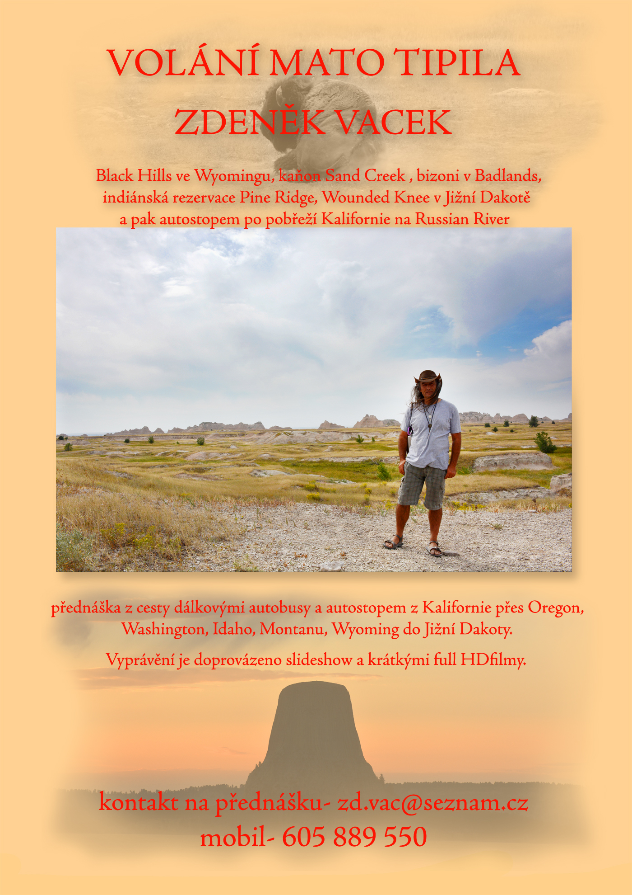
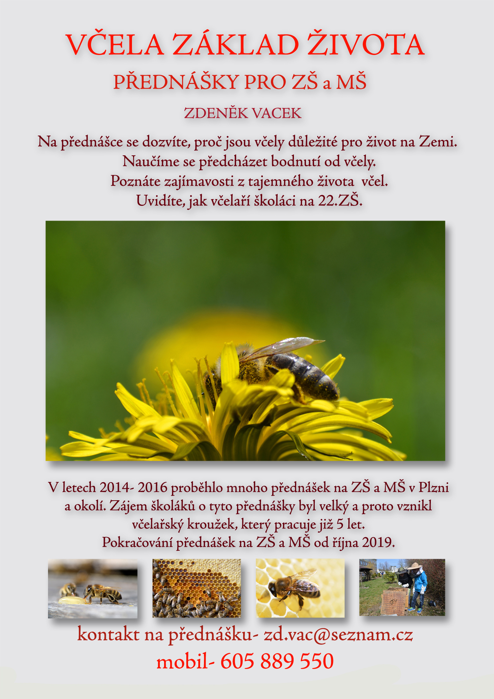
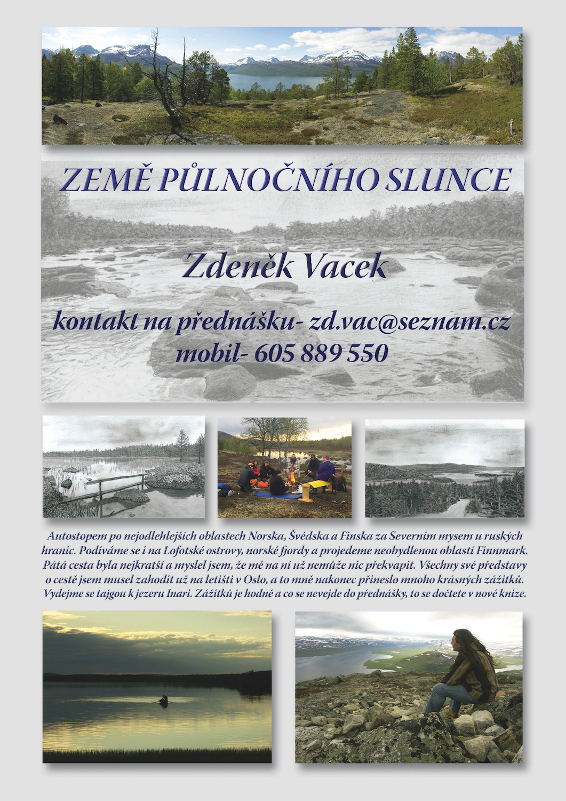

×
NabÃdka
Knihy
Přednášky
Filmy
Tábory
O webu
HRA
WEB SLAVÍ ZALOŽENÍ - SLEVY AŽ 40%
×
Hledat
☰ MENU
×
🔠Hledat

Krajinou mých snů
Cestovat po USA bez řidičského průkazu, mobilnÃho telefonu a kreditinÍ karty, přinese vÃce dobrodružstvÃ, než by člověk očekával. Když vám ale pomůže anděl strážný, všechno dopadne lépe než si vůbec dokážete představit.
Tu chci!

Včela základ života
Přednáška Včela základ života je určena pro žáky ZŠ a starÅ¡Ã děti MŠ . Je vždy přizpůsobena věku školáků ve tÅ™Ãdě. Tématem je důležitost včel pro člověka a celého života na Zemi. Žáci se dozvÍ přes různé zajÃmavosti...
Tu chci!

Zěmě PůlnočnÃho Slunce
VyprávěnÍ z pěti cest autostopem po nejodlehlejÅ¡Ãch oblastech Norska, Š védska a Finska za polárnÃm kruhem. Setkáme se i s národem Sämi, který tam žije přes 12 tisÃc let. PodÃváme se na Lofotské ostrovy, překrásné norské fjordy, procestujeme neobydlenou tajgu a tundru až k ruské hranic, kde se nacházÍ největÅ¡Ã jezero Inari a zavÃtáme i na nejsevernějÅ¡Ã bod Evropy Nordkapp.
Tu chci!